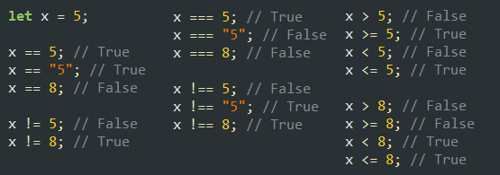

Instrukcja warunkowa if
Instrukcja warunkowa pozwala na wykonanie ciągu instrukcji, jeżeli jest spełniony podany warunek. Instrukcję warunkową utworzysz przy pomocy słowa kluczowego if.
W warunkach występują operatory porównań (w wyniku ich działania otrzymujemy wartość true/false):
| Operator porównania | Znaczenie |
|---|---|
| == | równe (pojedynczego znaku równości używa się do podstawienia zmiennej!) |
| != | nierówne |
| === | równe i tego samego typu |
| !== | nierówne lub równe, ale nie tego samego typu |
| < | mniejsze |
| > | większe |
| <= | mniejsze lub równe |
| >= | większe lub równe |
Przykłady warunków:
Warunki można łączyć przy pomocy operatorów logicznych:
| Operator logiczny | Znaczenie |
|---|---|
| && | koniunkcja, iloczyn logiczny ("i", AND). Wyrażenie jest prawdziwe, gdy wszystkie warunki połączone tym operatorem są prawdziwe. |
| || | alternatywa, suma logiczna ("lub", OR). Wyrażenie jest prawdziwe, gdy chociaż jeden z warunków połączonych tym operatorem jest prawdziwy. |
| ! | negacja ("nie", NOT). Zmienia wartość logiczną na przeciwną (true -> false, false -> true) |
Przykłady operatorów logicznych:
Zadanie 1.
W bloku znajdującym się niżej dołącz skrypt, w którym podasz liczbę całkowitą. Skrypt wyświetla odpowiedni napis w zależności od tego, czy podana liczba jest parzysta, czy też nieparzysta (wraz z podaną liczbą). Przykład wyprowadzenia wyników (podano liczbę 6):
Liczba 6 jest parzysta.